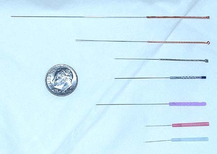

Acupuncture Needles

- The needles are very fine and flexible, slightly thicker than a hair.
- Single use, stainless steel, and sterile.
- Disposed by way of a medical hazardous waste company.
| NEEDLE GAUGES |
|
Korean & Japanese Gauge
|
Chinese Gauge
|
Thickness (mm)
|
Thickness (inches)
|
Color
|
| 00 |
- |
0.12 |
0.0047 |
Dark Green |
| 0 |
- |
0.14 |
0.0055 |
Lime Green |
| 1 |
40 |
0.16 |
0.0063 |
Red |
| 2 |
38 |
0.18 |
0.0071 |
Ivory |
| 3 |
36 |
0.20 |
0.0079 |
Blue |
| - |
34 |
0.22 |
0.0087 |
Pink |
| 5 |
32 |
0.25 |
0.0098 |
Purple |
| 8 |
30 |
0.30 |
0.0118 |
Brown |
| - |
28 |
0.35 |
0.0137 |
- |
| - |
26 |
0.40 |
0.0157 |
- |
| NEEDLE LENGTHS |
|
mm
|
13 |
15 |
25 |
30 |
40 |
50 |
60 |
75 |
100 |
125 |
|
inches
|
0.5 |
0.6 |
1.0 |
1.2 |
1.5 |
2.0 |
2.5 |
3.0 |
4.0 |
5.0 |
Treatments
- It takes a few minutes to insert the needles.
- Once in, needle retention time varies (0-30 minutes).
- Deqi is most important
- Age, constitution, relative strength
- very young, old, frail, tired, weak - less time
- stronger, healthier - more time
- Type of condition
- deficient - less time
- excess or musculoskeletal - more time
- Needle techniques
- The way the needle gets inserted and removed
- Manipulations of the needle while in place
- Needling order - general guidelines
- Face and body first, then extremities
- Top to bottom, and front to back
- Needle removal order - general guidelines
- Face and body first, then extremities
- Top to bottom, and front to back